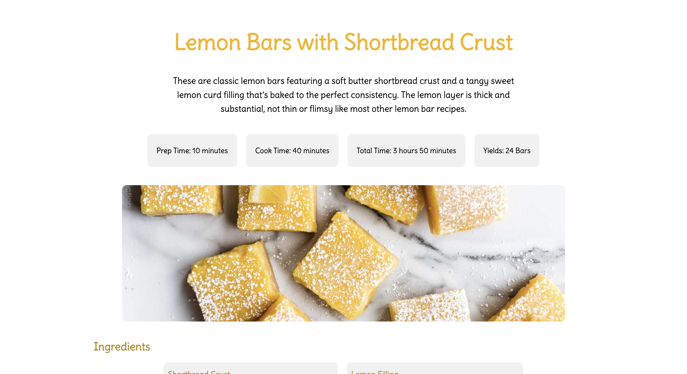
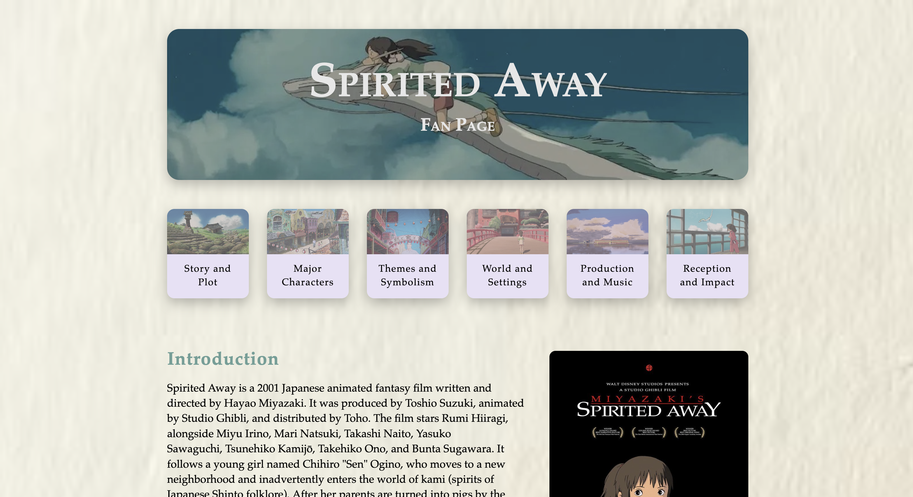
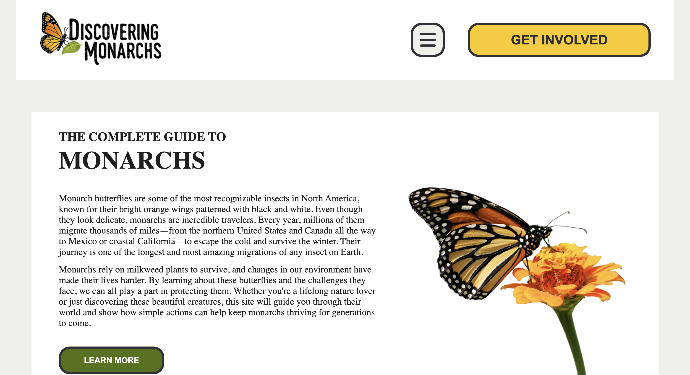

End-of-Semester Review
Natalie's Design Portfolio

Recipe Project
Role: Designer and Developer
Tools: Figma, VS Code
Languages: HTML, CSS
A recipe page for lemon bars: focuses on being clear, aesthetic, and clean. The specification was to create an actual webpage that will work visually on any device screen.
Open Project →

Microsite
Role: Developer
Tools: Figma, VS Code
Languages: HTML, CSS
A microsite I developed for the film Spirited Away, designed to match the creative vision of my director. The site focuses on a cohesive color palette, user accessibility, visual consistency, and an engaging experience.
Open Project →

Microsite
Role: Creative Director
Tools: Figma, VS Code
Languages: HTML, CSS
A microsite I collaborated on, contributing design ideas and feedback throughout the process. The goal of the website is to inform about getting involved with monarch butterfly conservation efforts.
Open Project →